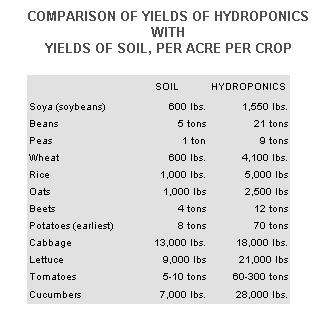

In MOTHER NO. 28 I described a homemade ecosystem . . . an underground hydroponic greenhouse and aquaculture tank which I recently built on my small New Mexico homestead. In that article I discussed the construction procedure and philosophical rationale of the project. Now I'd like to expand on some of the details: in this installment, specifically, the subject of hydroponic gardening.
The American Heritage Dictionary of the English Language defines "hydroponics" as follows:
hy-dro-pon-ics (hi' dre-pon'iks) n. Plural in form, used with a singular verb. The cultivation of plants in water containing dissolved inorganic nutrients, rather than in soil ....
Most plants grown hydroponically are raised in greenhouses under carefully controlled conditions. Gravel is usually used as a medium for root support, and a balanced mixture of all the necessary nutrients is periodically fed to the crops in a liquid form. This method is called "sub-irrigation culture". In large commercial greenhouses it's been refined to such a degree that-once the seedlings have been planted-almost all the work is done by automation. Delicate sensors in the gravel "decide" when the plants need more solution and turn on pumps which meter out the correct dosage.
The biggest advantage of the hydroponic method is that crop yields are increased many times over those of conventional agriculture. For example, the yield per acre of tomatoes grown in soil is from five to ten tons. With hydroponics, the harvest is from 60 to 300 tons! For cucumbers, the equivalent figures are 7,000 pounds compared with 28,000 pounds . . . for lettuce, 9,000 pounds and 21,000 pounds.
For years I'd heard about hydroponic gardening, but had never given the subject more room in my thoughts than a quickly contemptuous dismissal. After all, hydroponics is the quintessential form of chemical agriculture . . . and, to a dyed-in-the-wool organic gardener like me, the thought of feeding my vegetables with a pure chemical solution was blasphemy. Then one day about two years ago, I was browsing in a bookstore and came upon a thin newsprint pamphlet with the title Hydroponics!. My first reaction was an almost irrational disgust: "What kind of propaganda are the big chemical companies putting out now?" But the work had the aura of a counterculture publication: large format, cheap paper and on the cover a reproduction of Buckminster Fuller's Dymaxion map of the world. I picked up the booklet, gingerly leafed through it and then bought it on the spot.
Hydroponics!- by Steve Fox of Albuquerque, New Mexico-is definitely not a big business promotion for chemical fertilizers. On the contrary, it is the enlightened vision of a man who sees hydroponic agriculture as one solution to the coming world famine, and an alternative to the destruction of our once fertile soil with chemicals. Fox proposes that extensive use of hydroponic greenhouses, with their greater yields of produce, would actually free our cropland for organic agriculture! In other words, instead of poisoning our soil with chemical fertilizers which eventually destroy the micro-organisms that make natural plant growth possible, we would keep these chemicals in the controlled environment of a greenhouse where they couldn't "poison" anything more valuable than the gravel beds which serve as the root-support medium for hydroponically grown plants.
"But wait a minute!" you're probably saying. "What about the plants themselves? I'm not going to eat any vegetables that were grown in a chemical solution!" A good point, and one which used to bother me, until I did some research on the subject. A report in the March 11, 1974 Newsweek on the annual meeting of the American Association for the Advancement of Science quoted the following opinions expressed by the nation's top nutritionists:
. . . the organic nutritionists' basic error is their assertion that organically grown foods are more nutritious than others because they receive all their nutrients from "natural" rather than synthetic inorganic sources. `A basic fact of plant nutrition is that plant roots absorb the nutrients elements from the soil only in an inorganic form, explained plant physiologist Daniel I. Arnon of the University of California. "Plant nutrients in organic manures and composts become available to plants only after they are converted into inorganic form by the activity of soil microorganisms . . . "
The experts at San Francisco were at pains to point out that they were not disparaging so-called natural foods. . . that is, products free of additives, preservatives, artificial coloring and other chemicals added after the food has been harvested. "The health food advocates may be on legitimate ground when they attack a number of additives found in foods," conceded Allentown, Pennsylvania psychiatrist Stephen Barret, a prime critic of the organic-growth industry. "However, they tend to lump together arguments for organic gardening and against food additives as though one is naturally linked to the other-when, in fact, they are entirely different issues. "
Another article, entitled "Nutritional Value of Organically Grown Foods Same As That Using Commercial Products", appearing in the March 10, 1974 Sante Fe New Mexican, had this to say about the subject:
"Promoted and accepted by many people is the theory that foods grown "naturally" provide greater nutrition. . .
But absolutely no scientific evidence that this is so was gleaned by the Michigan Experiment Station in a 10 year study, or by the U.S. Plant, Soil and Nutrition Laboratory in Ithaca, New York in a 25 year program, or in a 34-year-long study on an experimental research farm in England.
These studies found that while soil improvement can increase the yield and size of crops, the nutrition factors of the food grown in such soil aren't altered . . .
All food scientists agree that all fertilizer elements have to be in a soluble form before any plant can use them . . . Once converted into the soluble form, the plant neither knows the difference nor does it make different use of them.
Now, before anyone takes me to task for advocating the use of chemical fertilizers-as these quotes seem to do-let me explain my position further. There's an adage in organic gardening that goes like this: "When fertilizing, always remember that the objective of the organic method is to feed the soil, not necessarily the plant." In other words, if you build your soil with organic material, you will eventually provide enough nutrients to grow healthy produce.
The spreading of chemical fertilizers, however, does just the opposite: It feeds the crops and not the land. The result is that the micro-organisms which break down organic material into the chemical form that plants can use are starved out, and the soil literally dies.
Purely and simply, to put raw chemical fertilizer on the soil is not unlike giving hard narcotics to a human being. A man on a steady maintenance dose of heroin, for example, can live a completely "normal" life as long as he receives that dose. If the drug is taken away from him, he suffers withdrawal symptoms and can no longer function. It's the same with the land. Once the natural micro-organisms have been destroyed by artificial fertilizers, the soil is to all intents a "junkie". Nothing will grow on it unless it receives its dose of chemicals.
In hydroponic gardening, however, there is no soil, so the plants can be fed the exact nutrients they need for rapid growth and volume production. Does this sound like a typical agribusiness statement? Maybe so . . . but bear in mind that the earth is already unable to feed its continually growing population. That's one reason why chemicals are being used: "Natural" methods can no longer keep up with the tremendous demand for food. The situation is bad, and getting worse. Doesn't it make more sense to solve a part of our problem with hydroponic methods rather than poison our cropland beyond the point of recovery?
Even if agricultural chemicals didn't destroy the soil-and even if they didn't wash into our lakes and streams and seep into the water table as pollutants-the use of artificial fertilizers on cropland would still be bad ecology. Petroleum is one of the major sources of such products . . . and it doesn't take an Einstein to see what is bound to happen to farmers who continue to rely on them. With our petroleum resources rapidly vanishing, what will those producers do with soil that's hooked on chemicals? And what will happen to the world's food supply?
"But," you might ask, "what about the chemicals used to make up the hydroponic solution? Aren't they derived from petroleum? Even if hydroponic gardening, properly done, doesn't cause pollution, won't it create a needless drain on a finite resource?"
To be quite frank, I don't know how the commercially available hydroponic chemicals are manufactured, or what raw materials they are derived from. And, while it's true that I'm using a conventional product in my tanks at the present time, my objective is to develop a hydroponic solution which is derived from organic materials. Fox, in his pamphlet, gives us a hint as to how an organic hydroponic solution might be created:
the end product of... regular composting, or manure itself, can be put into a burlap bag which, in turn, is put into solution. The proper mixture consists of 1/2 bushel of manure for fifty gallons of water. This solution which is very rich, and should be used about once every ten days-could be used daily if the solution is weaker . . . .
In all my research into the available literature, this is the only reference I have found to an organic hydroponic solution. Obviously, most hydroponic gardeners rely on the commercially prepared product. Perhaps the time has come for some basic research into an organically derived formula which can be duplicated by anyone with reasonable accuracy.
The Complete Book of Composting (Rodale Press, 1971) gives the nitrogen (N), phosphorus (P) and potassium (K) percentages of most common organic materials. (For example, rabbit manure has NPK percentages of 7.0, 2.4 and 0.6.) The method I intend to explore in my greenhouse is to mix the proper proportions of organic materials, compost them, feed the compost to earthworms, and then leach the earthworm castings with water to get my hydroponic solution.
The reason for using earthworms is twofold: [1] the worms can be used as fish food (remember, the greenhouse contains an aquaculture tank!) and [2] earthworm castings are known to be just about the richest organic material around. Rodale's The Complete Book of Composting quotes Dr. Ehrenfried Pfeiffer's opinion that "The earthworm excrements, the so-called castings, are the richest and purest humus matter in the world", and adds the following from the writings of Sir Albert Howard: "The casts . . . contain everything the crop needs-nitrates, phosphates and potash in abundance and also in just the condition in which the plant can make use of them."
I don't expect this project to be quite as easy as it may sound. For one thing, there are many micro-nutrients and trace elements which plants require for good growth . . . and finding natural, readily available sources of such chemicals may be difficult. Meanwhile, the greenhouse has been in existence just one year and-so far-I've concentrated on learning this new method of agriculture by using "conventional" methods.
As I mentioned briefly in the first article of this series, my hydroponic tanks are made from four 55-gallon drums (each one cut in half lengthwise to make a total of eight tanks). At the bottom front of every trough is brazed a three-inch piece of 1/2" O.D. brass tubing. A length of ordinary garden hose (1/2" I.D.) is clamped to this tube, and the other end attached to a similar tube which has been brazed onto a five-gallon can. The insides of both the tank and the can are painted with a thick coating of an asphalt-based paint. (This is necessary to prevent the metal surfaces from rusting, since they are constantly exposed to moisture.) The tank itself is filled to within a few inches of the top with pea-sized gravel. It's essential that a small piece of galvanized or fiberglass screen be placed over the inlet tube inside the container before gravel is installed, to prevent pebbles from clogging the hose.
My procedure for planting the tanks is to start seedlings in paper cups full of vermiculite, with the bottoms of the containers perforated enough to allow the hydroponic solution to enter. Once the plants are well started, it's a simple matter to place the entire cup in the gravel.
The five-gallon can is filled with the hydroponic solution. When it's time to feed the plants, the container is lifted so that it's higher than the tank. The fluid runs down the hose and into the gravel, irrigating the plant roots from below. (That's why they call this method "sub-irrigation" culture.) As soon as the can is empty, it's placed back down on the floor and the liquid flows out of the gravel, down the hose and back where it came from. I do this three times a day-morning, noon and evening-so that the roots of my crops are always moist but never actually flooded with solution for more than a few moments.
The hydroponic solution I'm using at present-until I can develop an organic substitute-is called Hyponex and is readily available in most nurseries. It comes in a powder form, with complete directions on the box for mixing and use. I've found it both inexpensive and effective.
I can attest that this method really works. At this writing (April 1974), we have growing in the greenhouse the healthiest, largest lettuce, spinach and cabbage we've ever raised. I've seen radish and lettuce plants become measurably larger from one day to the next! We find that lettuce, especially, grows like a weed and almost takes over the greenhouse if we don't trim it regularly for salads every evening.
To sum up, then, let me quote once more from Hydroponics! by Steve Fox:
HYDROPONICS OFFERS THESE ADVANTAGES:
FIRST LEVEL
1. Greater yields
2. Extension of growing season
3. No insecticides
4. Weeding is eliminated
5. No heavy labor required
6. No need to change greenhouse soil
7. Ease of transplanting
SECOND LEVEL
1. Greater rural densities
2. Possibility of letting land lie fallow
3. Less labor to harvest
4. Methods could be standardized
S. Maintains hydrological cycles
THIRD LEVEL
1. Permits establishment of earlier ecologies
2. Oxygen production in urban areas
3. Autonomous self-contained optimum environment
4. Space travel
With the world facing a food shortage of unimaginable proportions (read The Population Bomb by Paul Ehrlich), hydroponic agriculture could provide a viable alternative to starvation . . . if not for the whole world, then at least for those individuals who can read the handwriting on the wall.
In the next installment I'll describe how wind-generated electricity provides the power to heat my greenhouse and aerate the fish tank.
BOOKS ON HYDROPONICS
Hydroponics! Steve Fox, Station A, Albuquerque, New Mexico 87106, 1971.
Hydroponics as a Hobby: Growing Plants Without Soil, Circular 844, free from Publications Office, College of Agriculture, University of Illinois, Urbana, Illinois 61801.
"Copyright Newsweek, Inc., 1974, reprinted by permission.
Taken from: Hydroponics! by Steve Fox
A THOUGHT ON HYDROPONICS
. . . (when people) are unemployed, as millions have been during the last decade, they cannot buy their food but still must be fed. One way of lightening the burden of relief expenditures is to alter the ratio of agricultural to nonagricultural laborers. The unemployed must become farmers themselves, and produce their own subsistence . . . The answer lies in hydroponics, which can operate wherever climate is available and produce on a small plot the same amount of food as can agriculture on a large farm. It offers the most feasible method of removing the unemployed from towns and cities where private employment for all of them may never again be available and of allowing them to support themselves. Nations such as Italy and Japan which are worried by crowded populations and inadequate agricultural land could easily use it to multiply their production of foodstuffs manifold. Once their hunger is satisfied from within their own boundaries, the reasons for seizing the rolling wheatfields of the neighbors might be swept away ....
W.F. Gericke, Complete Guide to Soilless Gardening
(PrenticeHall, Inc., 1940)(emphasis DeKorne's)
|
|
 |
|